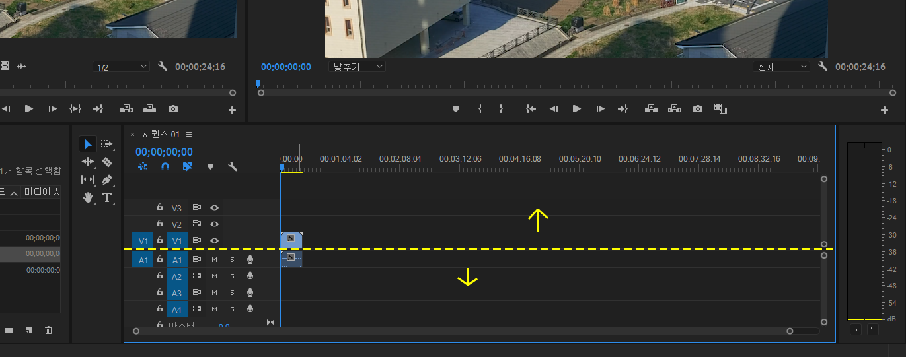
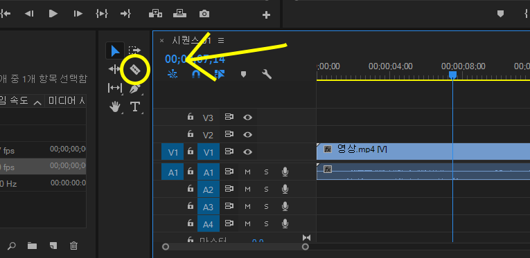
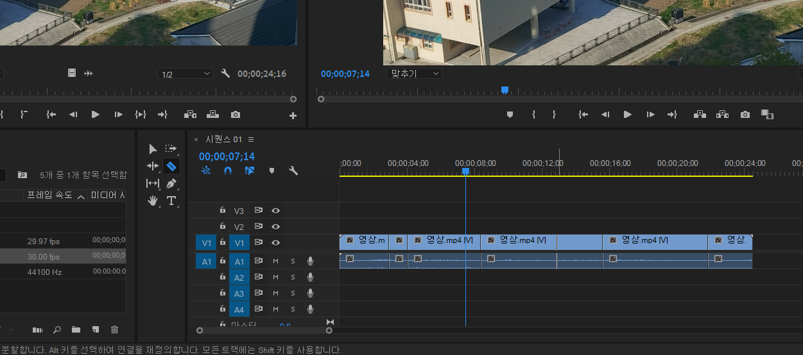
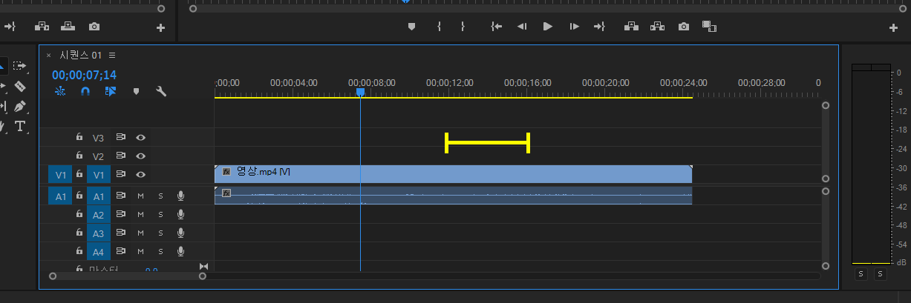
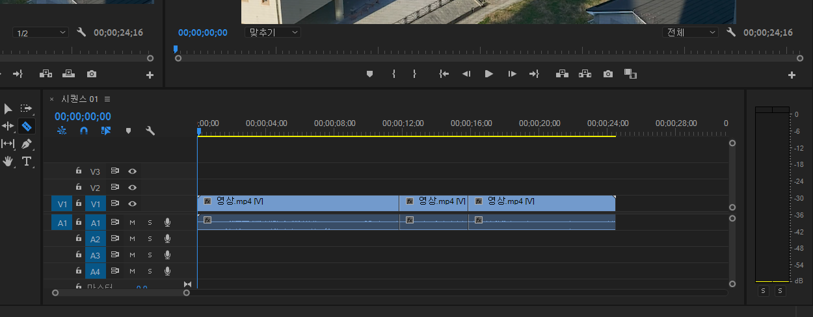
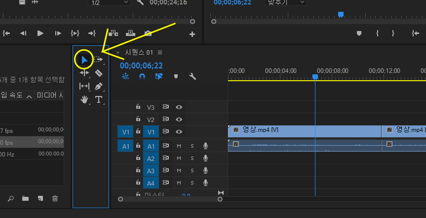
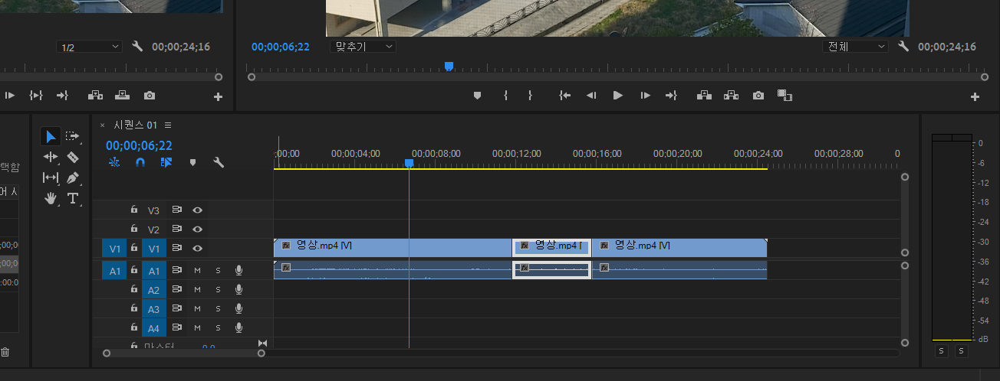
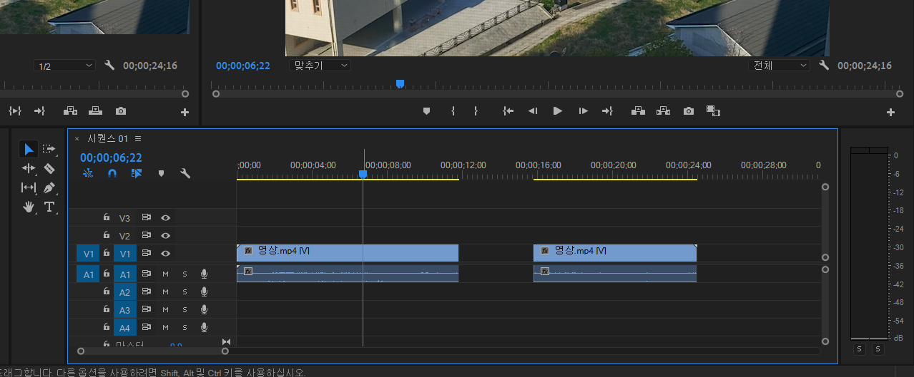

컷 편집
맨 처음으로 배워볼 것은 편집의 시작인 컷편집입니다.
컷 편집은 쉽게 말해서 영상을 자르고 붙이는 과정입니다.
영상 파일을 마우스로 꾹 눌러서 시퀀스로 옮겨줍니다.

저 파란색 블럭은 영상 파일입니다.
여기서 가운데 선을 중심으로 위 쪽은 영상, 아래 쪽은 음성입니다.
스페이스 바를 누르면 바로 위에 화면에서 영상이 재생됩니다.
alt키를 누른 채 마우스 휠을 밀면 보기 편하게 영상 블럭이 길어집니다.
이제 저 면도칼처럼 생긴 아이콘을 클릭하여 줍니다.

그 상태에서 영상 블럭을 클릭하면,
클릭한 부분들에 선이 생기면서 영상이 나누어지는 걸 볼 수 있습니다.
ctrl+z를 눌러 다시 원래대로 돌려주시고
내가 만약 저만큼만 영상을 잘라내버리고 싶다면 어떻게 해야 할까요?
우선 면도칼로 잘라내고 싶은 부분의 시작과 끝을 나눠주시고,
다시 원래 아이콘을 선택해준 후
잘라낼 부분을 선택하여 백스페이스(←키)를 누르면 그 부분이 삭제됩니다.

그런데 이대로 두면 저 사이에 아무것도 없어서 검은 화면만 나올
것입니다.
따라서 저 빈공간도 클릭하여 똑같이 백스페이스(←키)를 눌러주면
빈공간이 없어지고 영상이 착 붙을 것입니다.
자 이렇게 해서 컷 편집을 완료해보았습니다.
이제 이 방법으로 영상을 간결하고 짧게 편집할 수 있으며,
만약 다른 영상을 붙이고 싶다면 맨 처음 영상을 가져왔던 방법으로 뒤에
빈공간 없이 붙이면 될 것입니다.
다음은 사진 추가입니다.